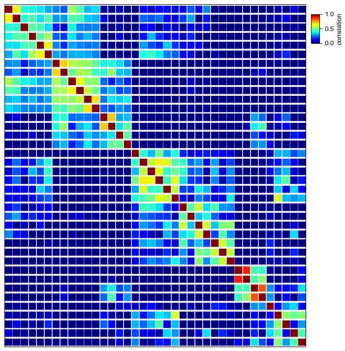
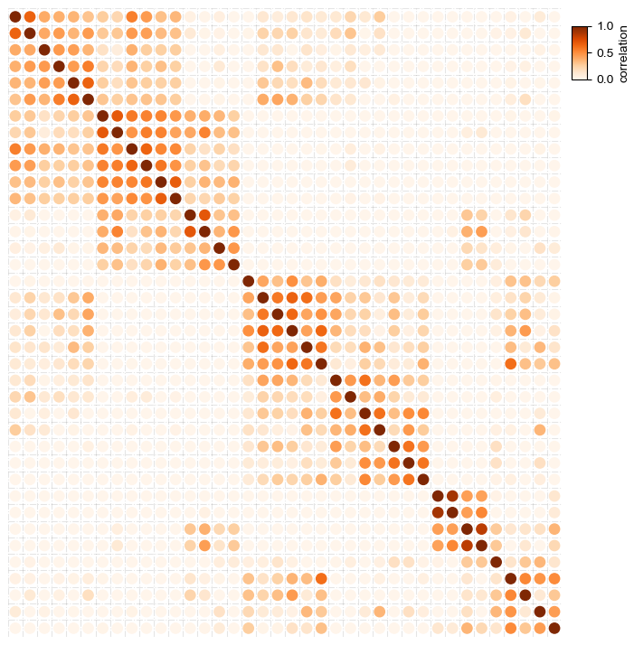
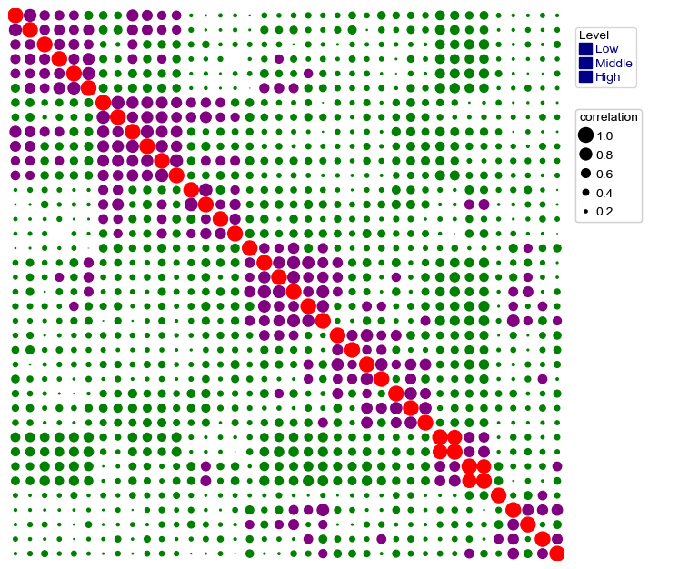
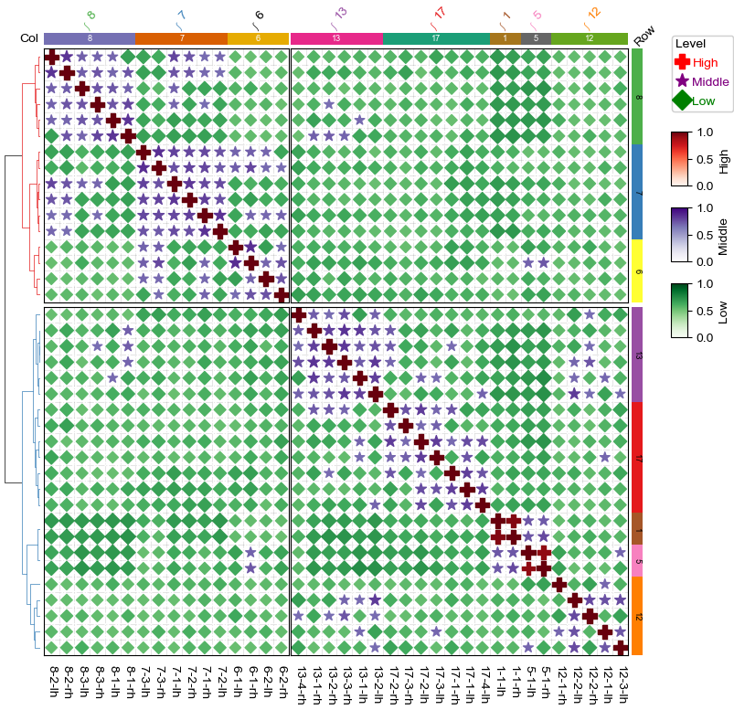

[1]:
import os,sys
%matplotlib inline
import matplotlib.pylab as plt
import pickle
plt.rcParams['figure.dpi'] = 100
plt.rcParams['savefig.dpi']=300
# sys.path.append(os.path.expanduser("~/Projects/Github/PyComplexHeatmap/"))
import PyComplexHeatmap
from PyComplexHeatmap import *
Load an example brain networks dataset from seaborn¶
[2]:
import seaborn as sns
# Load the brain networks dataset, select subset, and collapse the multi-index
df = sns.load_dataset("brain_networks", header=[0, 1, 2], index_col=0)
used_networks = [1, 5, 6, 7, 8, 12, 13, 17]
used_columns = (df.columns
.get_level_values("network")
.astype(int)
.isin(used_networks))
df = df.loc[:, used_columns]
df.columns = df.columns.map("-".join)
# Compute a correlation matrix and convert to long-form
corr_mat = df.corr().stack().reset_index(name="correlation")
corr_mat['Level']=corr_mat.correlation.apply(lambda x:'High' if x>=0.7 else 'Middle' if x >= 0.3 else 'Low')
data=corr_mat.pivot(index='level_0',columns='level_1',values='correlation')
[3]:
data.head()
[3]:
| level_1 | 1-1-lh | 1-1-rh | 12-1-lh | 12-1-rh | 12-2-lh | 12-2-rh | 12-3-lh | 13-1-lh | 13-1-rh | 13-2-lh | ... | 7-2-lh | 7-2-rh | 7-3-lh | 7-3-rh | 8-1-lh | 8-1-rh | 8-2-lh | 8-2-rh | 8-3-lh | 8-3-rh |
|---|---|---|---|---|---|---|---|---|---|---|---|---|---|---|---|---|---|---|---|---|---|
| level_0 | |||||||||||||||||||||
| 1-1-lh | 1.000000 | 0.881516 | -0.049793 | 0.026902 | -0.144335 | -0.141253 | 0.119250 | -0.261589 | -0.272701 | -0.370021 | ... | -0.366065 | -0.325680 | -0.196770 | -0.144566 | -0.366818 | -0.388756 | -0.352529 | -0.363982 | -0.341524 | -0.350452 |
| 1-1-rh | 0.881516 | 1.000000 | -0.112697 | -0.036909 | -0.144277 | -0.189683 | 0.084633 | -0.324230 | -0.332886 | -0.374322 | ... | -0.361036 | -0.274151 | -0.142392 | -0.070452 | -0.358625 | -0.402173 | -0.302286 | -0.339989 | -0.315931 | -0.343379 |
| 12-1-lh | -0.049793 | -0.112697 | 1.000000 | 0.343464 | 0.470239 | 0.100802 | 0.438449 | 0.339667 | 0.089811 | 0.272394 | ... | -0.036493 | -0.171179 | -0.043298 | -0.158039 | 0.005598 | -0.060007 | 0.079078 | -0.040060 | 0.027878 | -0.075781 |
| 12-1-rh | 0.026902 | -0.036909 | 0.343464 | 1.000000 | 0.130549 | 0.278569 | 0.127621 | -0.014404 | 0.051249 | -0.090130 | ... | -0.170053 | -0.124278 | -0.112148 | -0.063705 | -0.172007 | -0.040629 | -0.079687 | 0.024864 | -0.092263 | -0.068858 |
| 12-2-lh | -0.144335 | -0.144277 | 0.470239 | 0.130549 | 1.000000 | 0.521377 | 0.506652 | 0.320966 | 0.141884 | 0.608392 | ... | -0.075986 | -0.095015 | 0.012966 | -0.082816 | 0.023340 | 0.058718 | 0.034181 | 0.033355 | -0.022982 | 0.025638 |
5 rows × 38 columns
[4]:
corr_mat.Level.value_counts().index.tolist()
[4]:
['Low', 'Middle', 'High']
[5]:
corr_mat.head()
[5]:
| level_0 | level_1 | correlation | Level | |
|---|---|---|---|---|
| 0 | 1-1-lh | 1-1-lh | 1.000000 | High |
| 1 | 1-1-lh | 1-1-rh | 0.881516 | High |
| 2 | 1-1-lh | 5-1-lh | 0.431619 | Middle |
| 3 | 1-1-lh | 5-1-rh | 0.418708 | Middle |
| 4 | 1-1-lh | 6-1-lh | -0.084634 | Low |
Dot Heatmap¶
Plot traditional heatmap using square marker marker='s'¶
[6]:
plt.figure(figsize=(8,8))
cm = DotClustermapPlotter(data=corr_mat,x='level_0',y='level_1',value='correlation',
c='correlation',cmap='jet',vmax=1,vmin=0,s=0.7,marker='s',spines=True,alpha=0.7)
cm.ax_heatmap.grid(which='minor',color='white',linestyle='--',alpha=0.6,linewidth=1)
plt.show()
Starting plotting..
Starting calculating row orders..
Reordering rows..
Starting calculating col orders..
Reordering cols..
Plotting matrix..
Collecting legends..
Plotting legends..

Simple dot heatmap using fixed dot size¶
In default, using circle marker: marker='o'
[7]:
plt.figure(figsize=(8,8))
cm = DotClustermapPlotter(corr_mat,x='level_0',y='level_1',value='correlation',
c='correlation',cmap='Reds',vmax=1,vmin=0,s=0.5)
plt.show()
Starting plotting..
Starting calculating row orders..
Reordering rows..
Starting calculating col orders..
Reordering cols..
Plotting matrix..
Collecting legends..
Plotting legends..

Changing the size of point¶
In default, we determined the size of the points based on the value col if parameter s was not given
[8]:
plt.figure(figsize=(8,8))
cm = DotClustermapPlotter(corr_mat,x='level_0',y='level_1',value='correlation',
c='correlation',s='correlation',cmap='Reds',vmax=1,vmin=0)
cm.ax_heatmap.grid(which='minor',color='gray',linestyle='--',alpha=0.4)
plt.show()
Starting plotting..
Starting calculating row orders..
Reordering rows..
Starting calculating col orders..
Reordering cols..
Plotting matrix..
Collecting legends..
Plotting legends..
/gale/netapp/home2/wding/Software/anaconda3/lib/python3.10/site-packages/matplotlib/collections.py:981: RuntimeWarning: invalid value encountered in sqrt
scale = np.sqrt(self._sizes) * dpi / 72.0 * self._factor

Add parameter hue and use different colors for different groups¶
[9]:
plt.figure(figsize=(8,8))
cm = DotClustermapPlotter(corr_mat,x='level_0',y='level_1',value='correlation',hue='Level',
colors={'High':'red','Middle':'purple','Low':'green'},s='correlation',vmax=1,vmin=0)
plt.show()
Starting plotting..
Starting calculating row orders..
Reordering rows..
Starting calculating col orders..
Reordering cols..
Plotting matrix..
Collecting legends..
Plotting legends..
/gale/netapp/home2/wding/Software/anaconda3/lib/python3.10/site-packages/matplotlib/collections.py:981: RuntimeWarning: invalid value encountered in sqrt
scale = np.sqrt(self._sizes) * dpi / 72.0 * self._factor
/gale/netapp/home2/wding/Software/anaconda3/lib/python3.10/site-packages/matplotlib/collections.py:981: RuntimeWarning: invalid value encountered in sqrt
scale = np.sqrt(self._sizes) * dpi / 72.0 * self._factor

Add parameter hue and use different cmap and marker for different groups¶
[10]:
plt.figure(figsize=(8,8))
cm = DotClustermapPlotter(corr_mat,x='level_0',y='level_1',value='correlation',hue='Level',
cmap={'High':'Reds','Middle':'Purples','Low':'Greens'},
colors={'High':'red','Middle':'purple','Low':'green'},
marker={'High':'P','Middle':'*','Low':'D'},spines=True,
vmax=1,vmin=0,alpha=0.9)
plt.show()
Starting plotting..
Starting calculating row orders..
Reordering rows..
Starting calculating col orders..
Reordering cols..
Plotting matrix..
Collecting legends..
Plotting legends..
/gale/netapp/home2/wding/Software/anaconda3/lib/python3.10/site-packages/matplotlib/collections.py:981: RuntimeWarning: invalid value encountered in sqrt
scale = np.sqrt(self._sizes) * dpi / 72.0 * self._factor

Dot Clustermap¶
Plot clustermap using seaborn brain networks dataset¶
[11]:
corr_mat.head()
[11]:
| level_0 | level_1 | correlation | Level | |
|---|---|---|---|---|
| 0 | 1-1-lh | 1-1-lh | 1.000000 | High |
| 1 | 1-1-lh | 1-1-rh | 0.881516 | High |
| 2 | 1-1-lh | 5-1-lh | 0.431619 | Middle |
| 3 | 1-1-lh | 5-1-rh | 0.418708 | Middle |
| 4 | 1-1-lh | 6-1-lh | -0.084634 | Low |
[12]:
df_row=corr_mat['level_0'].drop_duplicates().to_frame()
df_row['RowGroup']=df_row.level_0.apply(lambda x:x.split('-')[0])
df_row.set_index('level_0',inplace=True)
df_col=corr_mat['level_1'].drop_duplicates().to_frame()
df_col['ColGroup']=df_col.level_1.apply(lambda x:x.split('-')[0])
df_col.set_index('level_1',inplace=True)
print(df_row.head())
print(df_col.head())
RowGroup
level_0
1-1-lh 1
1-1-rh 1
5-1-lh 5
5-1-rh 5
6-1-lh 6
ColGroup
level_1
1-1-lh 1
1-1-rh 1
5-1-lh 5
5-1-rh 5
6-1-lh 6
[13]:
row_ha = HeatmapAnnotation(Row=anno_simple(df_row.RowGroup,cmap='Set1',
add_text=True,text_kws={'color':'black','rotation':-90},
legend=False),
axis=0,verbose=0,label_kws={'rotation':45,'horizontalalignment':'left'})
col_ha = HeatmapAnnotation(label=anno_label(df_col.ColGroup, merge=True,rotation=45),
Col=anno_simple(df_col.ColGroup,cmap='Dark2',legend=False,add_text=True),
verbose=0,label_side='left',label_kws={'horizontalalignment':'right'})
plt.figure(figsize=(9, 8))
cm = DotClustermapPlotter(data=corr_mat, x='level_0',y='level_1',value='correlation',
hue='Level', cmap={'High':'Reds','Middle':'Purples','Low':'Greens'},
colors={'High':'red','Middle':'purple','Low':'green'},
marker={'High':'P','Middle':'*','Low':'D'},
top_annotation=col_ha,right_annotation=row_ha,
col_split=2,row_split=2, col_split_gap=0.5,row_split_gap=1,
show_rownames=True,show_colnames=True,row_dendrogram=True,
tree_kws={'row_cmap': 'Set1'},verbose=0,legend_gap=7,spines=True,)
plt.show()

Visualize up to five dimension data using DotClustermapPlotter¶
Plot enrichment analysis result using example dataset with samples annotations
[14]:
data=pd.read_csv("../data/kycg_result.txt",sep='\t')
data=data.loc[data.Category.isin(['rmsk1','ChromHMM','EnsRegBuild'])]
data.SampleID.replace({'Clark2018_Argelaguet2019':'Dataset1','Luo2022':'Dataset2'},inplace=True)
max_p=np.nanmax(data['-log10(Pval)'].values)
data['-log10(Pval)'].fillna(max_p,inplace=True)
data['ID']=data.SampleID + '-' + data.CpGType
vc=data.groupby('Term').SampleID.apply(lambda x:x.nunique())
data=data.loc[data.Term.isin(vc[vc>=2].index.tolist())]
# p_max=data['-log10(Pval)'].max()
# p_min=data['-log10(Pval)'].min()
# data['-log10(Pval)']=data['-log10(Pval)'].apply(lambda x:(x-p_min)/(p_max-p_min))
df_col=data.ID.drop_duplicates().to_frame()
df_col['Dataset']=df_col.ID.apply(lambda x:x.split('-')[0])
df_col['Correlation']=df_col.ID.apply(lambda x:x.split('-')[1])
df_col.set_index('ID',inplace=True)
df_row=data.loc[:,['Term','Category']].drop_duplicates()
df_row.set_index('Term',inplace=True)
[15]:
data.head()
[15]:
| Term | odds_ratio | Category | SampleID | CpGType | pvalue | EnrichType | -log10(Pval) | ID | |
|---|---|---|---|---|---|---|---|---|---|
| 49 | Het | 1.061 | ChromHMM | Dataset1 | Negative | 2.020000e-07 | Enrich | 26.0 | Dataset1-Negative |
| 55 | Tx | 1.029 | ChromHMM | Dataset1 | Negative | 4.580000e-07 | Enrich | 26.0 | Dataset1-Negative |
| 65 | TssFlnk | 1.056 | ChromHMM | Dataset1 | Negative | 2.370000e-06 | Enrich | 26.0 | Dataset1-Negative |
| 112 | TxWk | 1.022 | ChromHMM | Dataset1 | Negative | 8.660000e-05 | Enrich | 26.0 | Dataset1-Negative |
| 346 | DNA? | 1.350 | rmsk1 | Dataset1 | Negative | 2.760000e-02 | Enrich | 26.0 | Dataset1-Negative |
[16]:
data['-log10(Pval)'].describe()
[16]:
count 64.000000
mean 25.356918
std 3.632073
min 3.119186
25% 26.000000
50% 26.000000
75% 26.000000
max 26.000000
Name: -log10(Pval), dtype: float64
[17]:
print(data.CpGType.unique())
print(data.EnrichType.unique())
['Negative' 'Positive']
['Enrich' 'Depletion']
[18]:
df_col
[18]:
| Dataset | Correlation | |
|---|---|---|
| ID | ||
| Dataset1-Negative | Dataset1 | Negative |
| Dataset1-Positive | Dataset1 | Positive |
| Dataset2-Negative | Dataset2 | Negative |
| Dataset2-Positive | Dataset2 | Positive |
[19]:
df_row
[19]:
| Category | |
|---|---|
| Term | |
| Het | ChromHMM |
| Tx | ChromHMM |
| TssFlnk | ChromHMM |
| TxWk | ChromHMM |
| DNA? | rmsk1 |
| srpRNA | rmsk1 |
| DNA | rmsk1 |
| Unknown | rmsk1 |
| Satellite | rmsk1 |
| Simple_repeat | rmsk1 |
| Low_complexity | rmsk1 |
| LINE | rmsk1 |
| Quies | ChromHMM |
| ReprPCWk | ChromHMM |
| TssBiv | ChromHMM |
| ReprPC | ChromHMM |
| LTR | rmsk1 |
| snRNA | rmsk1 |
| SINE | rmsk1 |
[20]:
row_ha = HeatmapAnnotation(
Category=anno_simple(df_row.Category,cmap='Set1',
add_text=False,legend=False),
label=anno_label(df_row.Category, merge=True,rotation=0),
axis=0,verbose=0,label_kws={'rotation':45,'horizontalalignment':'left'})
col_ha = HeatmapAnnotation(
Dataset=anno_simple(df_col.Dataset,cmap='Set1',legend=False,add_text=True),
Correlation=anno_simple(df_col.Correlation,cmap='Dark2',legend=False,add_text=True),
verbose=0,label_side='left',label_kws={'horizontalalignment':'right'})
plt.figure(figsize=(3.5, 5))
cm = DotClustermapPlotter(data=data, x='ID',y='Term',value='-log10(Pval)',c='-log10(Pval)',s='odds_ratio',
hue='EnrichType', row_cluster=False,col_cluster=False,
cmap={'Enrich':'RdYlGn_r','Depletion':'coolwarm_r'},
colors={'Enrich':'red','Depletion':'blue'},
#marker={'Enrich':'^','Depletion':'v'},
top_annotation=col_ha,right_annotation=row_ha,
col_split=df_col.Dataset,row_split=df_row.Category, col_split_gap=0.5,row_split_gap=1,
show_rownames=True,show_colnames=False,row_dendrogram=False,
verbose=0,legend_gap=7,alpha=0.8)
plt.savefig("dotHeatmap1.pdf",bbox_inches='tight')
plt.show()

[21]:
plt.figure(figsize=(3.5, 5))
cm = DotClustermapPlotter(data=data, x='ID',y='Term',value='odds_ratio',c='-log10(Pval)',s='-log10(Pval)',
hue='EnrichType', row_cluster=False,cmap='jet',
colors={'Enrich':'red','Depletion':'blue'},
marker={'Enrich':'P','Depletion':'D'},value_na=25,c_na=25,
top_annotation=col_ha,right_annotation=row_ha,
col_split=df_col.Dataset,row_split=df_row.Category, col_split_gap=0.5,row_split_gap=1,
show_rownames=True,verbose=0,legend_gap=7,alpha=0.7)
# plt.savefig(os.path.expanduser("~/Gallery/20230227_kycg.pdf"),bbox_inches='tight')
plt.show()

[22]:
data['-log10(Pval)'].describe()
[22]:
count 64.000000
mean 25.356918
std 3.632073
min 3.119186
25% 26.000000
50% 26.000000
75% 26.000000
max 26.000000
Name: -log10(Pval), dtype: float64
[23]:
plt.figure(figsize=(3.5, 5))
cm = DotClustermapPlotter(data=data, x='ID',y='Term',value='-log10(Pval)',c='-log10(Pval)',s='odds_ratio',
hue='EnrichType', row_cluster=False,col_cluster=False,cmap='jet',
colors={'Enrich':'red','Depletion':'blue'},
marker={'Enrich':'P','Depletion':'_'},value_na=25,c_na=25,
top_annotation=col_ha,right_annotation=row_ha,
col_split=df_col.Dataset,row_split=df_row.Category, col_split_gap=0.5,row_split_gap=1,
show_rownames=True,verbose=0,legend_gap=7,spines=True,)
plt.show()